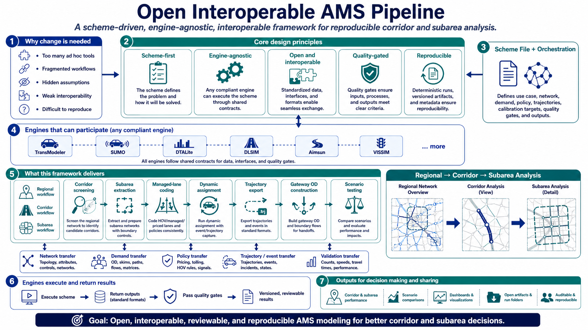

Dashboards — see the process and the results
Every pipeline step with readiness state, have/build/decide cards, data inventory, feature register, decisions, quality-gate panel, phase plan. The planner's map of the whole engagement.
② Key Statistics DashboardmeasuredLive quality gates G1–G8 (incl. the published failure), run-time ledger bars (65 s/scenario vs the killed 38-min run), FOCUSING zone tiers, head-to-head reproduction targets.
③ Network & Trajectory MapinteractiveThe I-66 subarea on a real map: top-1,000 weighted trajectories from the kernel's trajectory export, colored by weight, click for OD/gates/times. This is the DTAT contract, visible.
③b Cross-Resolution AMS ViewMRMThe classic regional → corridor → subarea three-level picture, live from one run: FOCUSING tiers, embedded trajectory map, gateway-OD table — with the S0–S10 workflow band on top.
④ I-17 CBI Dashboardflex lanesCorridor congestion-bottleneck dashboard (MP 244–252 flex-lane segment): direction toggle, speed heatmap, trajectory panel, KPI strip — the second-corridor archetype.
⑤ I-10 Route DashboardRoute-level CBI / harsh-braking analysis example — the same contracts on a third corridor.
The case, the process, the receipts
Step-by-step with measured wall times (prepare 1.6 s → assignment 65 s), gate outcomes, and the public post-run artifacts: gateway OD (11,115 pairs), tier map, quality gates JSON, trajectory sample.
Workflow Runbook (S0–S10)The five principles, calibration mini-loops with hard caps, assumption flags [A1–A9], the mandatory gmns_ready-before-kernel gate, and the failure log — nothing hidden.
Expert Validation Register22 machine-checkable gates distilled from FHWA 2013/2021/2022 reports and public workshop material — every practitioner pain mapped to a design response and an artifact.
DTAT Trajectory ContractThe kernel-side subarea trajectory/event export: streamed, clipped, weighted, policy-aware — no engine lock-in, R²=1.000 exactness proof.
DisclaimerEducation & research product. FHWA reports referenced and acknowledged; no endorsement; not a standard.